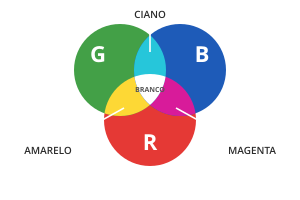
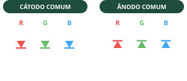

O que é um LED RGB?
O LED RGB reúne três LEDs em uma só cápsula: vermelho (R, red), verde (G, green) e azul (B, blue). Controlando o brilho de cada um com o sinal PWM do Arduino, misturamos as três luzes e obtemos milhares de cores. Ele tem 4 pernas: uma para cada cor e uma comum, que é a mais longa.

Sistema aditivo: misturando luz vermelha, verde e azul formamos as outras cores.
Como funciona
Na mesma cápsula existem três LEDs: vermelho (R), verde (G) e azul (B). Cada um tem sua própria perna, e os três compartilham a perna comum, a mais longa.
Variando o brilho de cada cor com PWM (0 a 255), a luz se mistura e nossos olhos enxergam uma nova cor. É o mesmo princípio dos pixels da tela do celular.
Cada cor precisa do seu próprio resistor. Usar um resistor só na perna comum faz as cores disputarem a corrente e brilharem de forma desigual.

Tipos
Cátodo comum
Perna longa no GND. É o mais comum nos kits e o usado na oficina.
Ânodo comum
Perna longa no 5V, com a lógica invertida: 255 apaga e 0 acende.
Difuso × transparente
O difuso mistura melhor as cores; no transparente, dá para ver os três pontos de luz.
Endereçável (WS2812)
Fitas e anéis em que cada LED é controlado por um único fio de dados.
Ficha técnica
- 4 pernas: R · comum (a mais longa) · G · B (a ordem pode variar)
- Um resistor de 220 Ω para cada cor
- Use três pinos PWM (~): 9, 10 e 11 na oficina
- Tensão direta: ≈ 2 V (R) · ≈ 3 V (G e B)
Montagem dos componentes

LED RGB com um resistor de 220 Ω em cada cor (mesma montagem da Prática 3).
Você vai precisar de
- 1× Arduino Uno R3 + cabo USB
- 1× Protoboard
- 1× LED RGB de cátodo comum
- 3× Resistores de 220 Ω
- 6× Jumpers macho-macho
Ligações
| Pino 11 | 220 Ω → perna R |
|---|---|
| Pino 10 | 220 Ω → perna G |
| Pino 9 | 220 Ω → perna B |
| GND | Perna comum (longa) |
#< código exemplo >
Acende vermelho, verde, azul e depois as três juntas (branco). Use para descobrir qual perna é qual: se a cor que aparece não bater com o comentário do código, troque os números dos pinos.
/*
Oficina de Robótica SELFÍS — Componente: LED RGB
Exemplo: testar cada cor do LED RGB separadamente (útil para descobrir
qual perna é qual). Mesma montagem da Prática 3.
Ligações: pino 11 -> 220 ohms -> R | pino 10 -> 220 ohms -> G
pino 9 -> 220 ohms -> B | perna comum (longa) -> GND
*/
const int PINO_R = 11;
const int PINO_G = 10;
const int PINO_B = 9;
void setup() {
pinMode(PINO_R, OUTPUT);
pinMode(PINO_G, OUTPUT);
pinMode(PINO_B, OUTPUT);
}
void loop() {
digitalWrite(PINO_R, HIGH); delay(1000); digitalWrite(PINO_R, LOW); // vermelho
digitalWrite(PINO_G, HIGH); delay(1000); digitalWrite(PINO_G, LOW); // verde
digitalWrite(PINO_B, HIGH); delay(1000); digitalWrite(PINO_B, LOW); // azul
// as três juntas: branco
digitalWrite(PINO_R, HIGH); digitalWrite(PINO_G, HIGH); digitalWrite(PINO_B, HIGH);
delay(1000);
digitalWrite(PINO_R, LOW); digitalWrite(PINO_G, LOW); digitalWrite(PINO_B, LOW);
delay(500);
}
💡 Teste primeiro no Tinkercad (Circuitos → Código → Texto → cole o código → Iniciar simulação). Depois carregue na placa real pela Arduino IDE.